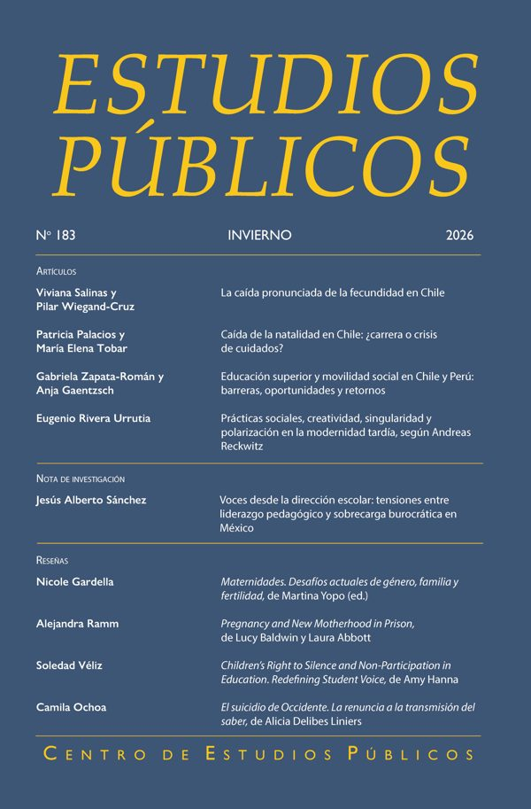
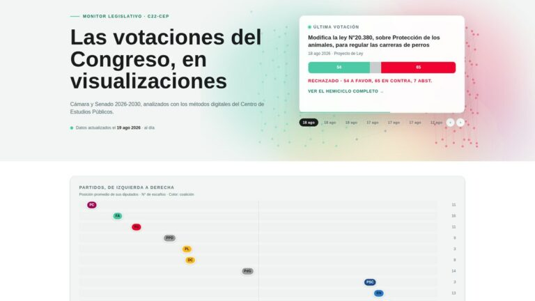
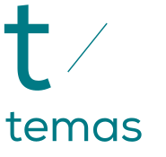
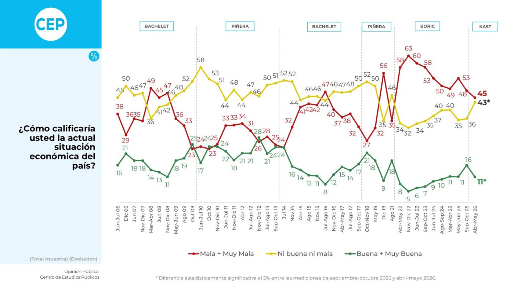
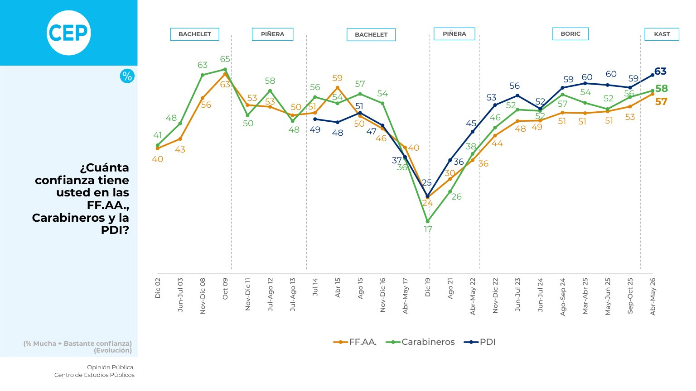
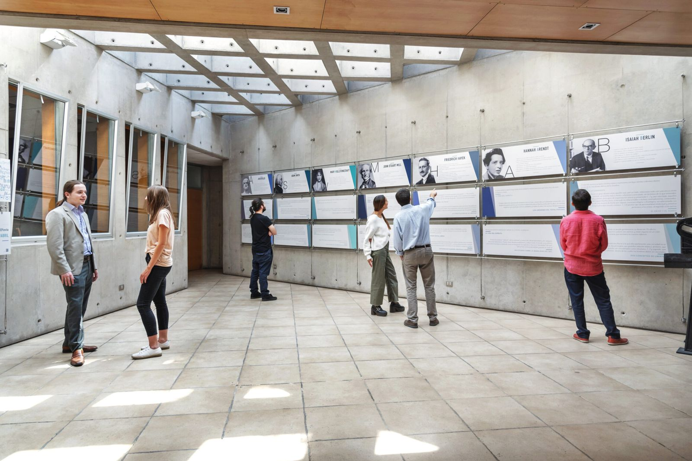

Puntos de Referencia N° 785
Centro de Estudios Públicos: investigación, encuestas y debate


Puntos de Referencia N° 786
Sala Cuna Universal. Evaluación del proyecto de ley y propuestas para asegurar su sostenibilidad
Roberto Cases V. y Sylvia Eyzaguirre T.


Podcast
Escucha las conversaciones del CEP en Spotify
Encuesta CEP
Encuesta CEP N° 96, Abril-Mayo 2026
Recibe nuestras publicaciones
Puntos de Referencia, Encuesta CEP y eventos, una vez por semana.
Lo más reciente
Ver todo
Puntos de Referencia N° 783
Entrada y salida al empleo: una caracterización para el período pre y postpandemia
El Punto de Referencia “Entrada y salida al empleo: una caracterización para el período pre y postpandemia”, muestra que la creación de empleo se ha desplazado hacia ocupaciones independientes y unidades productivas de menor…
Rodrigo Vergara M. y Roberto Cases V.

Libros
La condición posdemocrática en Chile. Política al borde del colapso
Aldo Mascareño y Juan Rozas

Puntos de Referencia N° 782
El momento económico internacional y nacional. Agosto 2026
El estudio "El momento económico internacional y nacional. Agosto 2026" sostiene que, para Chile, las perspectivas para 2027 son favorables. La aprobación del Plan de Reconstrucción es una buena noticia y, junto con un escenario…
Rodrigo Vergara M.
Momento Económico
Boletín Momento Económico agosto 2026
Avanza agosto y ya es tiempo de un nuevo Momento Económico, a cargo de nuestro investigador senior Rodrigo Vergara. Un esperado espacio de análisis al que, en este boletín, y como ya es tradición, le agregamos el apartado "Foco…
Andrés Araya C. y 5 más

Puntos de Referencia N° 781
Radiografía del gasto fiscal en Chile 1990-2025
En el Punto de Referencia “Radiografía del gasto fiscal en Chile 1990-2025”, los autores dan cuenta que ante el desafío de la estrechez fiscal, el espacio para racionalizar gastos depende menos de recortes en el margen que de…
Joaquín Álvarez y 2 más

Puntos de Referencia N° 780
La (des)aprobación del gobierno a nivel regional en Chile, según la Encuesta CEP: Una aproximación utilizando estimaciones de áreas pequeñas
De acuerdo con el Punto de Referencia "La (des)aprobación del gobierno a nivel regional en Chile, según la Encuesta CEP: Una aproximación utilizando estimaciones de áreas pequeñas", la desaprobación muestra una mayor variación…
Cesar Gamarra G. y Sandra Quijada J.
Libros
La condición posdemocrática en Chile. Política al borde del colapso
Aldo Mascareño y Juan Rozas
Puntos de Referencia N° 782
El momento económico internacional y nacional. Agosto 2026
El estudio "El momento económico internacional y nacional. Agosto 2026" sostiene que, para Chile, las perspectivas para 2027 son favorables. La aprobación del Plan de Reconstrucción es una buena noticia y, junto con un escenario…
Rodrigo Vergara M.
Momento Económico
Boletín Momento Económico agosto 2026
Avanza agosto y ya es tiempo de un nuevo Momento Económico, a cargo de nuestro investigador senior Rodrigo Vergara. Un esperado espacio de análisis al que, en este boletín, y como ya es tradición, le agregamos el apartado "Foco…
Andrés Araya C. y 5 más
Puntos de Referencia N° 781
Radiografía del gasto fiscal en Chile 1990-2025
En el Punto de Referencia “Radiografía del gasto fiscal en Chile 1990-2025”, los autores dan cuenta que ante el desafío de la estrechez fiscal, el espacio para racionalizar gastos depende menos de recortes en el margen que de…
Joaquín Álvarez y 2 más
Puntos de Referencia N° 780
La (des)aprobación del gobierno a nivel regional en Chile, según la Encuesta CEP: Una aproximación utilizando estimaciones de áreas pequeñas
De acuerdo con el Punto de Referencia "La (des)aprobación del gobierno a nivel regional en Chile, según la Encuesta CEP: Una aproximación utilizando estimaciones de áreas pequeñas", la desaprobación muestra una mayor variación…
Cesar Gamarra G. y Sandra Quijada J.

Puntos de Referencia N° 780
La (des)aprobación del gobierno a nivel regional en Chile, según la Encuesta CEP: Una aproximación utilizando estimaciones de áreas pequeñas
De acuerdo con el Punto de Referencia "La (des)aprobación del gobierno a nivel regional en Chile, según la Encuesta CEP: Una aproximación utilizando estimaciones de áreas pequeñas", la desaprobación muestra una mayor variación…
Cesar Gamarra G. y Sandra Quijada J.
Puntos de Referencia N° 779
Fragilidad institucional y expectativas ciudadanas al inicio del Gobierno de J. A. Kast. Un análisis en base a la Encuesta CEP N°96
En el Punto de Referencia "Fragilidad institucional y expectativas ciudadanas al inicio del Gobierno de J. A. Kast. Un análisis en base a la Encuesta CEP N°96", los autores concluyes que esta doble fragilidad deja la…
Aldo Mascareño y 2 más
Puntos de Referencia N° 778
Apuestas en Chile: regulación y peso económico de un mercado en expansión
El Punto de Referencia "Apuestas en Chile: regulación y peso económico de un mercado en expansión" estima el mercado online no autorizado como la brecha entre la tendencia contrafactual del mercado regulado y sus ingresos…
Sebastián Aliaga y 3 más
Puntos de Referencia N° 777
Crecer en campamentos. El drama de un doble vínculo
El Punto de Referencia "Crecer en campamentos. El drama de un doble vínculo" propone un modelo de barrios transitorios, el cual tiene potencial para convertirse en una política público-privada de salida de campamentos hacia…
Aldo Mascareño y 2 más

Puntos de Referencia N° 776
Más allá de las utilidades: cómo evaluar la justificación, el desempeño y la exposición fiscal de las empresas públicas en Chile
En el Punto de Referencia "Más allá de las utilidades: cómo evaluar la justificación, el desempeño y la exposición fiscal de las empresas públicas en Chile", sus autores sostienen que la evaluación de las empresas públicas debe…
Xiomara Kuwae y 3 más
La revista del CEP
Estudios Públicos
Revista trimestral de acceso abierto, arbitrada y multidisciplinar, publicada por el CEP desde 1980. Economía, política, historia y humanidades, con atención a la región iberoamericana.

N° 183 · 2026
Artículos
La caída pronunciada la fecundidad en Chile
Viviana Salinas y Pilar Wiegand
Artículos
Caída de la natalidad en Chile: ¿carrera o crisis de cuidados?
Patricia Palacios y María Elena Tobar
Artículos
Educación superior y movilidad social en Chile y Perú: barreras, oportunidades y retornos
Gabriela Zapata-Román y Anja Gaentzsch
Artículos
Prácticas sociales, creatividad, singularidad y polarización en la modernidad tardía según Andreas Reckwitz
Eugenio Rivera Urrutia
Notas de Investigación
Voces desde la dirección escolar: tensiones entre liderazgo pedagógico y sobrecarga burocrática en México
Jesús Sánchez
C22 métodos digitales
Grupo interdisciplinario del CEP que analiza la sociedad chilena con métodos digitales: visualizaciones, análisis de texto y datos abiertos.

Análisis onlineMonitor Legislativo: las votaciones del Congreso en visualizacionesAnálisis online
El lado B de la megarreforma: las capas ocultas de la conversación digital
Análisis online
De la reconciliación a la seguridad: el vocabulario de los discursos del balcón (1990–2026)
Análisis online
Elecciones 2025: Análisis de los programas de gobierno. El vocabulario oculto de las elecciones

Economía
Ver todo
Puntos de Referencia N° 774
El mundo según Polymarket: control del futuro en mercados de eventos
El Punto de Referencia "El mundo según Polymarket: control del futuro en mercados de eventos" concluye que el escenario general es el de una frontera aún difusa entre ilegalidad y operación regular. En ello, la legislación…
Opinión
El empleo que no vuelve
Opinión
Segundo tiempo de 2026: ¿todo va a estar bien?
Puntos de Referencia N° 772
El momento económico internacional y nacional. Junio 2026
Política e instituciones
Ver todo
Puntos de Referencia N° 775
Joseph Roth, pensador del ius publicum
El Punto de Referencia "Joseph Roth, pensador del ius publicum" propone que el escritor Joseph Roth puede ser leído como un pensador del ius publicum y no solamente un defensor nostálgico del orden plurinacional del Imperio…
Opinión
La constitucionalización de la política
Opinión
El problema de (volver a) constitucionalizar la política
Opinión
Más allá des Estatuto Administrativo: El laberinto del empleo público
Sociedad
Ver todoPuntos de Referencia N° 773
El lado B de la megarreforma: señales de alerta temprana sobre problemas futuros
En el Punto de Referencia "El lado B de la megarreforma: señales de alerta temprana sobre problemas futuros" sus autores concluyen que el análisis de señales débiles, o señales de alerta temprana, ofrece oportunidades de…
Opinión
Locos
Opinión
Niñez en campamentos: No se trata solo de viviendas
Opinión
Una reina filósofa del Norte
Voces del CEP
Ver todoBoletín mensual con lecturas breves sobre la coyuntura.

Voces del CEP
Salud: más allá de las listas de espera

Voces del CEP
Seguridad, más allá de la emergencia

Voces del CEP
Crecimiento futuro versus déficit presente: la gran apuesta de Hacienda

Voces del CEP
Volver al mérito en educación
Opinión
Ver todo
“Cuidados
La cuenta regresiva de los cuidados

“Automatización
Más allá de la automatización

“Cultura
Jesse Norman en el CEP

“Descentralización
La urgente deuda de médicos especialistas en regiones

“Cultura
Por qué el 18 es el 18

“Agrícola
El empleo agrícola que no vuelve

“Desempleo
La meta del 6,5%

“Desempleo
Un presupuesto 2027 pro empleo
La Encuesta CEP en cifras
Ver todoEncuesta CEP N° 96, Abril-Mayo 2026, publicada el 10 de junio de 2026. Cada gráfico muestra la serie completa de la pregunta.

Economía
45% califica como mala o muy mala la situación económica del país; 11 % la considera buena o muy buena.
Política e instituciones
52% califica como mala o muy mala la situación política, frente a 61 % en septiembre-octubre de 2025.

Sociedad
63% tiene mucha o bastante confianza en la PDI; 58 % en Carabineros y 57 % en las FF.AA.
Todas las encuestas desde 1987 Buscador de preguntas Explorar todas las series en el graficador

Comprometidos con una sociedad libre y democrática
Somos una fundación privada sin fines de lucro de carácter académico, que busca aportar al conocimiento en temas de interés público, en favor de una sociedad libre y democrática.
Más sobre el CEP- 1980primer número de Estudios Públicos
- 1987primera Encuesta CEP
- 96Encuestas CEP publicadas
- 786Puntos de Referencia